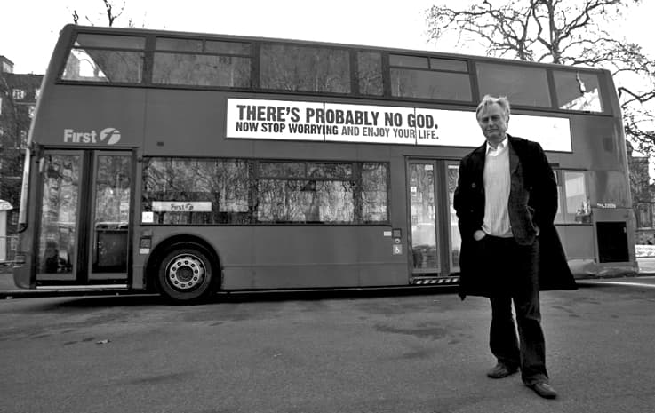
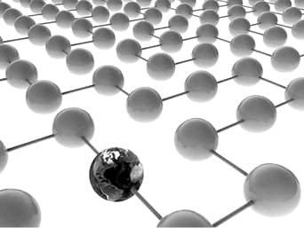
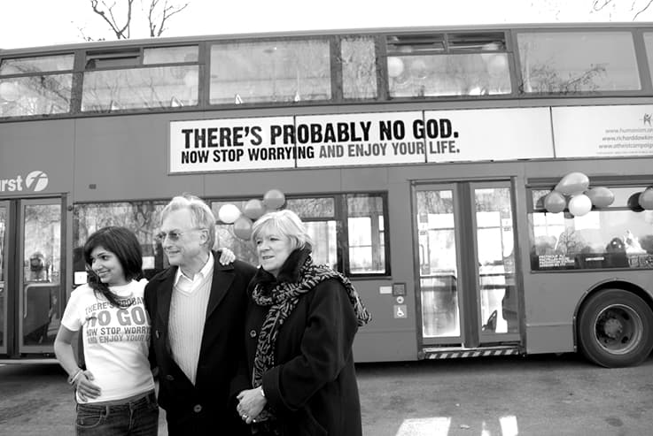

Trăim într-o lume paralelă cu lumea reală pe care o putem atinge în orice clipă. Există o poartă care duce dincolo, în realitate - trebuie trecut un prag. Nu e nimic magic - filosofia nu are loc aici, cum nu este nici locul culturii - de altfel după cum am mai spus, nici cultura, nici știința și nici filosofia nu au mântuit vreodată pe cineva - cel puțin de la facerea lumii; spre deziluzia celor ce încă mai caută, nu este vorba despre substanța sau nonsubstanța alchimică și despre nici o transformare din orice în aur. E adevărat că fiecare din aceste căi - pe care noi le considerăm false - este foarte complicată. Drumurile acestea sunt foarte speciale și surprinzătoare. Ceea ce se caută prin aceste căi - tinerețe fără bătrânețe și viață fără de moarte - este de neaflat. Așa pare. Fiindcă, în fapt nici se află și nici de vreo trebuință ne este.
Aceste căutări arată că nouă ne este pe plac tot ce este mai complicat, fiindcă preferăm în ultimă instanță… jocul în sine: labirintul a fost o provocare majoră mereu, cum piatra filosofală sau transformarea a orice în aur au dat mereu impresia salvării. Elixirul. Asta vrem noi: tot ceea ce poate fi mai departe de simplitate, claritate, realitate și mântuire.
Și asta fiindcă suntem fiii unei lumi în care trăim, lume care are mai multe particularități decât oricând și care dacă nu poate fi simplă, caută să fie simplificatoare. Traversăm o perioadă a istoriei în care comunicarea nu mai este cu putință; comunicarea s-a încheiat chiar aici, lângă noi, în lumea aparentă. A rămas ceea ce aparține lumii reale, cu alte cuvinte, lumii pe care noi nu o trăim; a rămas: cuminecarea. Pragul pe care odată trecându-l ne aflăm în lumea reală este pragul Bisericii. Aici este cuminecarea întru Cuvânt - Trup și Sânge. Aici e lumea reală. Pe cât de reală pe atât de paralelă cu lumea în care ne ducem noi existența.
Mult trâmbițata criză mondială nu este altceva decât începutul unei revoluții mondiale ce se desfășoară atipic pentru noi, în afara tiparului pe care noi deja îl cunoaștem din experiență. Lovitura lumii contemporane este provocată și se desfășoară programatic, după planuri financiare bine stabilite și controlate. Ne aflăm într-un punct în care experiența eternilor revoluționari își spune cuvântul: lumea poate fi cucerită și stăpânită printr-o tehnică foarte veche: constrângerea financiară. Fără sânge - sau doar în măsura în care aceasta folosește.
Ce fel de revoluție este aceasta? Este o revoluție universală sau, cu un cuvânt de mare cuprindere acum, globală. Globalizatoare - care are în vedere întreaga omenire, întreg globul pământesc. Este vorba despre o mișcare totală, declanșată și controlată cu instrumente financiare - prin care sunt aservite cea mai mare parte dintre popoarele lumii - la nivelul întregii planete. Transformarea statelor naționale independente din punct de vedere economic, în state „bancare” internaționale a pregătit terenul pentru acest pas, prin crearea dependenței financiare a tuturor statelor - care își pierd în acest fel independența și caracterul național - față de marea finanță (unică!) mondială. Dar partea financiar economică este doar instrumentul prin care se realizează acest „fenomen” - este important să observăm și să înțelegem acest lucru.
O numim revoluție într-un mod impropriu, căci este vorba de fapt despre o contra-revoluție. Mai precis este un fenomen ce are în vedere - după planuri și statute foarte exacte în care se vorbește despre pești, vărsători, ere noi, o nouă ordine mondială, egalități, fraternități, libertăți șamd - întoarcerea omului pe o altă cale, mai exact întoarcerea feței omului contemporan de la Hristos, la nivelul întregii omeniri.
Nu sunt speculații, ci planuri riguroase care sunt în plină desfășurare, de scopuri foarte clar înscrise în documentele de bază ale iudeofrancmasoneriei - indiferent dacă cei mai mici dintre masoni au sau nu habar de ceea ce li se petrece. E vorba despre punerea în practică a unei doctrine ce s-a dezvoltat ca o plagă în ultimele secole.
Ținta este clară: înlocuirea, alungarea omului îndumnezeit, înduhovnicit; sfârșitul „erei creștine”, alungarea lui Hristos. (E. foarte interesant de observat ce se petrece în Anglia: pe autobuzele de transport în comun stă scris: „Dumnezeu nu există”). Pentru lumea actuală este pe cât de emblematic pe atât de simptomatic.

Acest fenomen - de răzvrătire totală împotriva lui Dumnezeu - este prezentat ca un fapt divers. În fapt acest lucru s-a mai întâmplat, cu oarecare rezultate, în atât de apreciata Renaștere. Trebuie înțeles despre ce fel de renaștere era vorba. Renașterea cui?
După cum citim în toate operele de specialitate este vorba despre renașterea „spiritului antic! a „clasicismului antic”, despre revenirea la „formele date și impuse de arta antichității”.
Cu alte cuvinte, este vorba despre revenirea - „renașterea” - omului vechi, revenirea omului neîndumnezeit, adică depășirea sau moartea omului creștin. Mai precis, Renașterea - și mai departe umanismul - este o atitudine antropocentrică, anti Hristos. Acest lucru este evident pentru orice observator.
Este cunoscut că epoca pe care o trăim noi acum este denumită de filosofi epoca post umanistă. Adică epoca de „după” om, după ce omul a trecut. Astfel că putem considera că suntem „ultimii oameni” sau un soi de post oameni.
Pentru a reveni, este interesant de observat că epoca renașterii urmează unei perioade de mare forță spirituală a omenirii, denumită de propaganda culturală pozitivist atee: „evul mediu întunecat”. Cum s-ar spune, cei mai importanți domnitori ai Țărilor Românești care au scris istoria, au întemeiat statele românești și au sfințit pământul românesc cu mii de mânăstiri și biserici întru lauda lui Hristos - parte dintre ei sfinți și mucenici - au fost niște „obscurantiști întunecați”?
Nu ne întrebăm ce anume mediază acest „ev”, nici de unde vine întunecarea și blamarea acestui „ev”, și nici cât durează el. Se poate însă înțelege - printr-o mică manevră de disimulare cultural textuală - că întunecarea vine de la faptul că evul mediu întunecat se plasează între două străluciri: strălucirea antichității și strălucirea Renașterii.
Adică, perioada în care omenirea s-a apropiat de Hristos în cea mai mare măsură este o perioadă „întunecată” de strălucirile a două perioade: cea de dinainte de Hristos - când cerul devenise neîncăpător pentru inflația de zei și dumnezei - și cea în care Hristos a fost înlocuit cu omul renașterii lui Da Vinci (învingătorul!), gnostic și cabalist deopotrivă.
Tot odată cu Renașterea a apărut „dogma științei”, prelucrată la maxim de toate epocile care au urmat, până la „revoluția științifică” care (nici asta!) nu se mai termină, ci e la fel de continuă ca aceea a lui Troțki - un fel de religie a omului ce așteaptă de câteva sute de ani să-i mai crească o mână, un picior sau să „devină”, „să evolueze”, „să stăpânească natura” șcl.
Astfel, omul a încetat de a mai privi în sus, iar privirile lui s-au întors spre cercetarea luciferică, spre căutarea transformării…
În fapt, „dogma științei” contemporane nu are nou în ea decât forma de prezentare și caracterul general, popular. Știința modernă nu este altceva decât doctrina - sau mai vechea „mistică” - a alchimiei. Atât știința cât și alchimia au același punct terminus, același mod de operare și același scop.
Actuala revoluție - pe care noi o numim criză financiară mondială - nu este altceva decât o contrarevoluție anticreștină, antihristică, al cărei unic scop este uciderea fărâmelor de dumnezeire care au mai rămas în om; această din urmă lovitură a fost pregătită și pornită treptat cu multă vreme în urmă, și pe mai multe planuri.
Cultural, prin Renaștere cu toate consecințele foarte greu de cuantificat pentru omul actual; tot în Renaștere prin sistematizarea științelor oculte și recrudescența gnozelor.
Social, prin Revoluția franceză și lungul șir de revoluții declanșat programatic de iudeofrancmasonerie, care nu s-a încheiat și care a creat omul revoluționar de profesie, care trăiește cu idealul troțkist de revoluție continuă.
Politic, prin crearea unei singure părți, a unei singure doctrine politice, (în mai multe variante: liberalismul liberal - care are o mare capacitate de metamorfozare: de la creștin democrație, până la comunism și anarhism) fundamentată republican, constituțional, democratic și desigur revoluționar (și impusă tot de revoluția franceză). Ne referim, desigur, la năzuința iudeofrancmasonică a republicii universale, constituționale, democratice și revoluționare, a cărei înfăptuire se petrece în mare măsură sub ochii noștri.
Revoluția este un act social de revoltă care are caracter popular, de mase și care are drept scop înlocuirea unei forme de conducere cu o alta - respectiv a unei clase conducătoare care reprezintă o formă de guvernare, cu o altă clasă conducătoare care reprezintă o altă formă de guvernare. Revoluția este o invenție relativ nouă, după cum am menționat de câteva ori, de o vârstă cu Revoluția franceză. Aparent revoluția este definită de democrație în forma ei maximă de manifestare, Dar odată încheiată revoluția, democrația devine principalul adversar al statului nou creat în acest fel.
Imaginea democratică este pe atât de necesară pe cât este de justificativă - există sintagme consacrate: „voința poporului”, „poporul își ia destinul în propriile-i mâini” șamd. În așa fel încât, sensul termenului de revoluție este unul foarte bun, de vreme ce se consideră că orice revoluție aduce o noutate social politică. Revoluția este legată conceptual de aceste două noțiuni: democrație și noutate, care nasc o a treia noțiune, pe care se bazează societatea modernă: evoluția. Este, desigur, o farsă deoarece intră în jocul acestor termeni atât caracterul artificial, cât și lipsa de consistență a celor doi termeni. Pe de altă parte nu tot ce-i nou e bun, iar în viața unui popor orice revoltă numită revoluție lasă sechele grave în conștiința colectivă.
Societatea contemporană este victima acestui fenomen, repetat cu obstinație până la a deveni „măsura normalității”. Altfel spus, pentru ultimul om măsura normalității este revoluția continuă, răzvrătirea continuă. Astfel, ultimul om, omul post uma- nist, omul de după om este definit de aceste concepte, care la rândul lor definesc fenomene anormale din care poate apărea această ființă neființială: renaștere, revoluție, evoluție, liberalism, „religia științei”, mirajul confortului și fuga de suferință.
Toate îl au în centru pe acest hibrid, humanoidul, antropoidul lumii post umane. Trecând treptat de la calitatea de persoană - impusă de Hristos, prin venirea Sa pe pământ - această creatură a devenit individ - material pentru noua pseudo-știință, statistica. Mai departe, necesitatea înregistrării și, în final, stăpânirea prin urmărirea continuă a fiecărui individ - este ceea ce se petrece acum, prin această campanie de cipuire, care are ca finalitate implanturile în corpul uman (se poate spune că lanțurile sclaviei antice erau cu mult mai bune, fiindcă de lanțuri mai puteai scăpa… dar de cipuri ba).
Ultimul om este gol. Pe dinăuntru. Ca o carcasă. El nu mai cere mântuire de la Mântuitorul și nu e interesat să cânte „luminează haina sufetului meu”. Grija lui se îndreaptă spre afară, spre straie. Ca urmare fericirea lui vine din exterior.
Ultimul om trăiește în afara lui însuși. Revolta, revoluția nu mai este lăuntrică, ci a ieșit și ea în afară. El nu mai are în seamă decât „afara” - el s-a dar pe sine însuși afară din el și asta nu pentru a-I face loc lui Hristos, ci pentru că nu mai există nimic care să-l intereseze în interiorul lui. Liniștea lui este adusă de tot ce este în afara lui. Iar pentru revoluție are cine să lucreze.
Ultimul om este mulțumit sufletește. Cel care îi dă liniștea, eurodumnezeul său are grijă de sufletul său. Lui i se închină ultimul om, rugându-l să-i dea cât mai mulți euroîngeri. Și, la urma urmei, nici nu mai contează cui se închină, fiindcă ultimul om consideră că dacă se închină și-a făcut treaba sufletului.
Ultimul om este singur. Dar nu-l deranjează defel această singurătate. Căci el nu mai știe ce este cuminecare - el se însumează, se adună și se înmulțește. Nu face parte din nici un neam, nu are naționalitate și tinde să nu mai aibă identitate - nici acest lucru nu-l stânjenește. EL trebuie să devină un „punct” dintr-o rețea (network), care se plănuiește să cuprindă, într- un viitor nu prea îndepărtat, întreaga omenire. Este un „punct” și singura modalitate de relaționare este cea exterioară, cu alte nenumărate „puncte”. Aceasta este punerea în aplicare a teoriei enunțate de părintele lumii contemporane, Giordano Bruno (desigur, ilustru cabalist renascentist), într-una din lucrările sale fundamentale - „De vinnculis in genere”.

Este singur, dar nu ca sihaștrii. Ultimul om este singur ca o fisă de un euro - fiindcă asta se roagă el la eurodumnezeul său: să devină o fisă de un euro.
În rest, lipsă de viață, incapacitatea de a pricepe: paralizie.
Dar, fără să realizeze, ultimul om este un luptător încercat. Tocmai prin lașitatea sa, prin închinarea sa la eurodumnezeu, prin lipsa sa de voință, prin indiferență; prin toate acestea și prin multe altele, ultimul om luptă neîncetat, dând cu piciorul în țepușă, împotriva lui Hristos.
Nimic nu este mai fără de înțeles, mai inutil și în același timp mai periculos pentru această creatură post umană, decât mântuirea prin jertfă, decât Hristos. Ultimul om este cel care se teme și fuge din răsputeri de suferință, de durere, de sacrificiu, de jertfă. El se declară ateu - adică în afara dumnezeirii, fără Dumnezeu - cu o formă nouă de pasivitate. Dar a fi în afara lui Hristos nu este nicidecum o formă de pasivitate, ci implică o angajare „revoluționară”.
Deasupra ultimului om nu stă nici crucea și nici icoana. Deasupra lui stă esența tuturor năzuințelor sale, pe care le primește de copil, apoi și le crește însuși, și în final le cuprinde într-o mistică. Este pseudo-salvatorul și păcălitorul mântuirii, cârjă a existenței ce nu are nevoie de cârjă, creatorul confortului și cel ce alungă suferințele, dușmanul durerii și noul inventator al plăcerilor: este banul.
Priviți cu atenție acest portret și încercați să nu vă recunoașteți.
Încercați să nu spuneți:
ULTIMUL OM SUNT EU.
